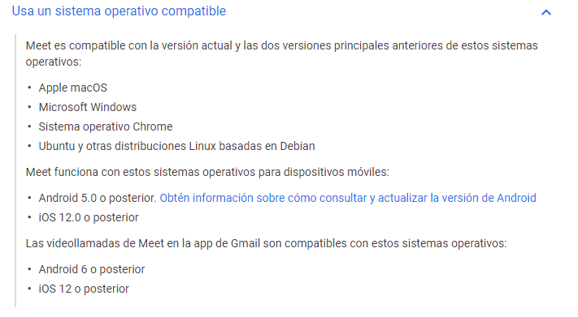

Google Meet
Es una aplicación diseñada para las empresas o diferentes centros de educación. Permite realizar videoconferencias con una gran cantidad de participantes. Esta plataforma conecta a las áreas profesionales permitiendo de esta manera que se realicen reuniones rápidas.
Se puede tener acceso a esta nueva herramienta por medio de G suite, la cual es una plataforma paga creada para las empresas de Google. Este sitio es considerado como una excelente herramienta para los trabajos que se llevan en la actualidad.
Las comunicaciones avanzan cada vez más, por eso Google Meet tiene como función entrelazar a las empresas con sus proveedores o clientes de una manera rápida y sencilla. Permitiendo que se realicen las reuniones por medio de videoconferencias.
Requisitos
Antes que nada debes iniciar sesión en la cuenta de G Suite. También debes tener descargado la aplicación en tu móvil.
Para poder realizar las videollamadas hay que asegurarse de contar con los siguientes requisitos: en primer lugar se debe verificar que tu equipo sea compatible con Google Meet. Además, todos los sistemas operativos y los navegadores web deben ser compatibles.
Aunado a esto, se debe permitir a la aplicación a que acceda a cierto tipo de herramientas como la cámara y micrófono de tu dispositivo. Esta app sé pude instalar en cualquier dispositivo ya sea iOS o Android los cuales son los que están marcando la tendencia en tecnología en la actualidad.
Características
Funciones como compartir la pantalla, capturas en tiempo real o vista expandida estarán disponibles en Google Meet para todo el mundo. Por el momento no está disponible la creación de una sala desde meet.google.com, pero durante los próximos días se activará la opción. Google avisa que la llegada será gradual.
Google Meet admite hasta 100 participantes en una misma videollamada, pudiendo mostrar hasta 16 participantes en pantalla al mismo tiempo. Una función añadida la semana pasada y que acerca el aspecto de Google Meet al de otras soluciones como Zoom.
Entre las novedades de Google Meet también tenemos un modo de baja luz para compensar la poca iluminación de los participantes, subtítulos en directo y una opción de cancelación de ruido.
Entre las características de Google Meet que la compañía promociona está el poder eliminar y silenciar participantes, no permitir usuarios anónimos, videollamadas cifradas, no requerir ningún tipo de plugin y contar con aplicaciones para el móvil dedicadas, tanto en Android como en iOS.
Ventajas
Anteriormente, Google Meet solo estaba disponible para los usuarios de los planes de empresas y negocios de GSuite. Con ella, pueden conectarse hasta 100 participantes y, hasta el próximo 30 de septiembre, sin límite de tiempo. Tiene un requisito importante: para organizar o acceder a una reunión, hay que utilizar siempre una cuenta de Google (no basta con hacer clic en un link).
• Además del gran número de participantes, por ahora las reuniones no tendrán límite en cuanto a su duración. A partir de octubre, en cambio, con la versión gratuita de la plataforma solo se permitirán conexiones de 60 minutos como máximo.
• Google Meet está integrado con Google Calendar, por lo que se puede acceder a las reuniones programadas desde el mismo calendario.
• También puede enlazarse con otras herramientas de Google, como Drive, para compartir documentos, hojas de cálculo y presentaciones.
• Al igual que Zoom, el sistema permite la vista en galería, para que una gran cantidad de usuarios puedan ver sus rostros en forma simultánea.
• Una de las funcionalidades más interesantes de Google Meet es la posibilidad de manejar la iluminación de la imagen, lo que mejora la calidad de la transmisión en entornos oscuros o demasiado iluminados.
• Al momento de anunciar el libre acceso a la plataforma, Google comunicó con un énfasis especial cuáles son las protecciones de seguridad con las que cuenta para evitar interferencias y robo de información.
Desventajas
Una de las debilidades de Meet es que permite que cualquier participante, excepto en las cuentas de educación, pueda silenciar o eliminar a otro. Desventaja que podría ser muy complicada en caso de ser una reunión muy masiva. Para eso, existe la opción de transmitir por streaming.
Diferencias entre Google Meet y Hangouts
Aunque la desaparición de Hangouts se haya Google Meet ya ocupa su lugar gracias a su evidente superior calidad. En qué se diferencian Meet y Hangouts a la hora de realizar videollamadas:
- • Participantes: En Meet, con G Suite Basic y G Suite para Centros Educativos: se pueden hasta 100 participantes; con G Suite Business hasta 150, y con G Suite Enterprise y G Suite Enterprise para Centros Educativos hasta 250.
- Hangouts admite reuniones de hasta 25 personas.
- • Plataformas compatibles: Microsoft Internet Explorer 11 -con complementos- y Microsoft Edge, así como con hardware de Google Meet y Chromebox y Chromebase para reuniones.
- En el caso de Hangouts, es compatible con Android, iOS y navegadores Chrome, Safari e Internet Explorer -con complementos-, así como con hardware de Google Meet y Chromebox y Chromebase para reuniones.
- • Unirse a una videollamada: En Meet puedes hacerlo a través de navegadores y aplicaciones móviles, Google Calendar, con una URL de enlace o código de reunión, mediante llamada a un número interno o con el hardware de Google Meet y Chromebox y Chromebase para reuniones.
- En Hangouts, a través de navegadores y aplicaciones móviles, Gmail y Google Calendar, con el hardware de Google Meet y Chromebox y Chromebase para reuniones y con los complementos de Microsoft Outlook 2007, 2010 y 2013.
- • Enviar mensajes en videollamadas: En Meet puedes a través de navegadores y aplicaciones móviles y en Hangouts sólo en la versión web.
- • Mostrar documentos o toda la pantalla: Tanto en Meet como en Hangouts puedes mostrar toda la pantalla o sólo una ventana concreta en reuniones.
- • Participantes externos: Meet permite dar acceso a las videollamadas a cualquier participante mediante un único enlace para compartir. En Hangouts, el acceso a las videollamadas se gestiona mediante una combinación de invitaciones y permisos de Calendar.
- • Unirse a una reunión llamando a un número de teléfono: Las ediciones de G Suite Basic, G Suite Business, G Suite Enterprise y G Suite Enterprise para Centros Educativos de Meet admiten números internacionales. En Hangouts, los participantes no pueden marcar un número interno para unirse a una videollamada.
- • Grabar reuniones: Sólo se puede en G Suite Enterprise o G Suite Enterprise para Centros Educativos de Meet.
- • Ver presentaciones en dispositivos móviles: Mientras que Meet tiene contenido de alta resolución y se puede pellizcar la pantalla para acercar la imagen en la aplicación móvil, el contenido en Hangouts es de baja resolución.
- • URLs de reunión: En Meet hay URLs únicas de reunión y en Hangouts las URLs son editables.
Como usar la plataforma
Como se programa reuniones
Está App permite programar las reuniones, solo se debe agregarlas al calendario de Google. Las videoconferencias o reuniones que son realizadas por medio de Google Meet se encuentran protegidas con códigos cifrados.
Esta aplicación cuenta con un sistema de pago, así que la cantidad de participantes en las reuniones depende de la tarifa que hayas seleccionado. Google Meet fue diseñada para facilitar las actividades en las empresas y centros educativos.
En definitiva, la misma permite que se vean los participantes de la reunión en forma de mosaico. Se puede compartir archivos y solo escucharán a los miembros que están conectados, ya que el ruido exterior queda excluido. Esta herramienta llego para complementar el trabajo que se realiza en la actualidad.